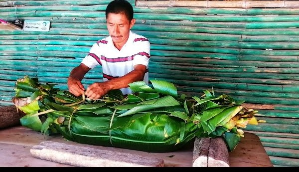
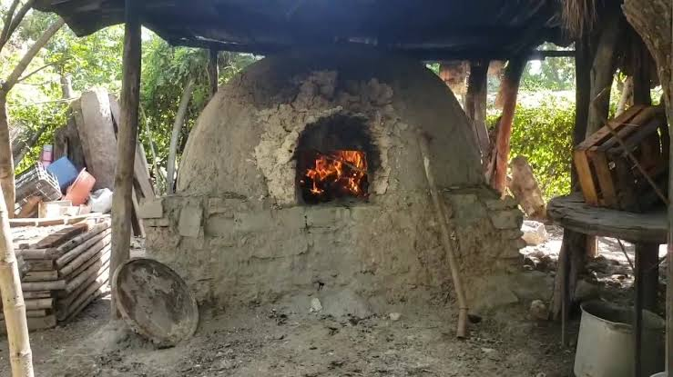
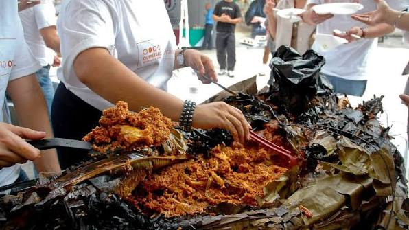

Maíz y masa
Ingrediente esencial.
Chiles y especias
Parte del sabor tradicional.

Preparación
Ingredientes seleccionados.

Envoltura
Presentación tradicional.

Cocción
Proceso que requiere tiempo.

Producto terminado
Listo para compartir.